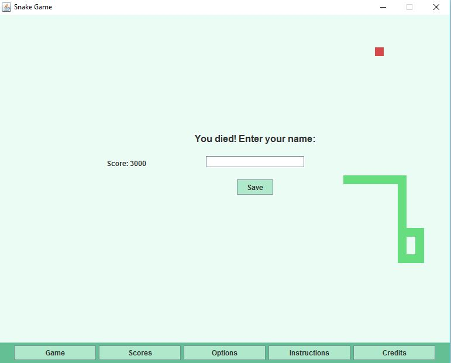

In the fall of 2016 I took an intermediate object-oriented design course. It was taught in Java, and focused on really honing our ability to design good, object-oriented software. The final project was assigned as a way of allowing us to use and showcase a few of the concepts taught in the course. I worked with two other students and built a simple snake game that relies heavily on Java Swing. Parts of the project use an MVC framework, and my team designed a very simple way of saving data using a text file. The part of this project that I contributed to the most was the actual game engine itself, while my teammates did an amazing job with the score-saving system and the look and feel of the overall program. The GitHub repository width all of our code can be found here.
In the summer of 2016 I decided it'd be great to build my own website. After being a member of Penn State's IST Web Consulting Group for a semester, web design and development had caught my attention, and I figured a great way to learn more about it all would be to code a static website from scratch. The result was the website that you're now viewing! Everything is built with HTML and CSS, and I didn't use any external CSS libraries or HTML templates. For hosting, I found that the site could be easily hosted from GitHub, so I went with that as a short-term free solution. The other great benefit to this is that you can easily view my code. And I'd love feedback on my code! Web development is still something I'm learning about, and I know my work is far from perfect. So head over to my GitHub account, check out my code, and send me an email with any feedback you'd like to provide. It'd mean a ton!